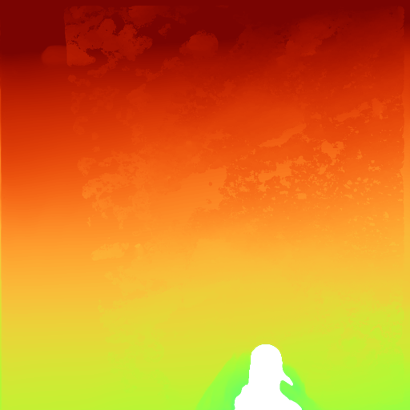
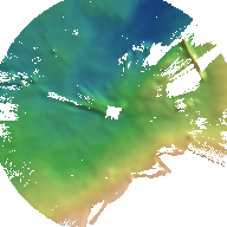
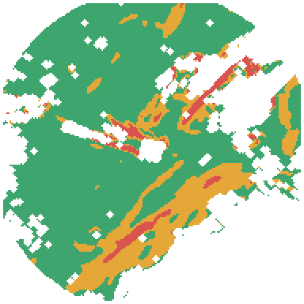

Curiosity rover · Sol 1100 · Gale Crater · 19 Navcam stereo frames
Navcam Stop Model
Curiosity's Navcam photos at one stop turned into walkable 3D ground. Stereo gives true depth where both cameras matched; Depth Anything V2 fills the gaps after being scaled to the stereo points in the same photo. Drag to orbit, scroll or pinch to zoom, tap the ground to measure.
Loading the terrain model…
N
Tap once to read a point. Tap a second point to measure the walk between them.
Ground covered–square metres, top-down
Pixels with 3D–stereo only → with fill
Depth Anything error–median per photo, on stereo pixels it never saw
Mesh–triangles
How one photo becomes ground
The same four steps run on every frame. This is the frame with the most ground filled in.
3 · Depth AnythingEvery pixel, but no units: near and far only.

4 · Scaled and mergedTwo numbers fitted to the stereo pixels give it metres; it fills the holes.
The site from above
All frames merged into one height map on a 0.25 m grid, north up, rover in the centre. Slope is measured over about 0.75 m, roughly one stride.

N ↑
5 m
Height, shaded from the north-west.

N ↑
5 m
Walk slope classes.
Every frame, scored
Each photo tries three ways of turning Depth Anything's output into metres and keeps the one that does best on a few stereo pixels it set aside. Error is then measured on stereo pixels the fit never saw. Photos aimed at the horizon gain the most.
Frame
Points to
Looks
Stereo 3D
With fill
Fit used
Error, one plain fit
Error, chosen fit
What this shows
NASA's stereo XYZ files, the camera model and the rover pose line up to the millimetre, so many frames merge into one scene with no manual alignment.
Depth Anything V2 Small, with no training, scaled per photo to its stereo points, lands within about 5% of stereo and covers the holes stereo leaves.
How you scale it matters as much as the model. One straight-line fit fails on photos that see both nearby ground and distant hills; a power-law fit, chosen automatically, fixes most of that.
All 19 photos merge into one continuous ground surface on a 15 cm grid: stereo where any photo measured it, Depth Anything only where nothing else did. That surface gives a slope map, the layer a Marswalk planner needs.
What it doesn't
Filled areas have no stereo to check against, so treat them as estimates, especially far from the rover. Where any frame has stereo, stereo is used and the estimate is dropped.
One site only. A Marswalk spans kilometres, so the route needs orbital terrain (HiRISE or CTX); this model is the close-up at one stop.
The slope colours use example limits (15° and 25°), not NASA EVA rules. The rover mask is a simple box.
Built with gale-marswalk-planner (AstroNox, NASA Space Apps 2026 rehearsal). Images and stereo data: NASA/JPL-Caltech, Mars Science Laboratory Navcam RDRs from the PDS Imaging Node (MSLNAV_1XXX). Depth model: Depth Anything V2 Small (Apache-2.0). Viewer: three.js.